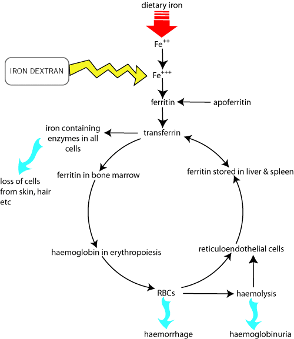

Iron deficiency anaemia is mainly a disease of piglets kept under intensive conditions. They require about 7mg iron / day which would normally be obtained from eating soil; sow's milk does not contain this amount. If untreated, piglets will develop clinical signs at 3 - 6 weeks old, they are usually given a depot injection of iron in the first week (by the farmer). This is becoming less important as piglets are weaned younger (sometimes 3 weeks old). Rarely, the sow is given iron (must be ferrous salt) most of which passes through her; the piglets obtain the iron by eating the sow's faeces.
Too much circulating iron in the piglet encourages bacteria to grow (iron is necessary for most bacteria and is often a limiting factor in their growth) causing problems like polyarthritis.
Iron dextran is the main form of injectable iron for the treatment of iron deficiency in piglets at 3 days old. It stains meat (and everything else!) yellow so should be injected behind the ear rather than the gluteals.
Gleptoferron is not available in NZ, it is used in same way as iron dextran in piglets.
Various "tonics" for horses are marketed containing ferric (ammonium) citrate; iron must be in the ferrous form (usually ferrous gluconate) to be absorbed orally.
Copper is also necessary for iron utilisation. Ruminants can be deficient in copper and are usually given oral supplements of a variety of trace elements.

Vitamin B12 acts sequentially in the pathway (with vit C & folic acid) which leads to the synthesis of nuclear proteins in cell division. In deficiency, erythropoiesis is arrested and megaloblasts (large nucleated RBC's which contain more haemoglobin and do not function normally) are released. Deficiency is caused by malabsorption in gut disease so it must be given parenterally.
Cobalt is required for synthesis of vitamin B12 by ruminal micro-organisms. Low cobalt in pasture leads to bush sickness on volcanic soils. Treatment is a slow release cobalt bullet or pasture top dressing.
Folic acid deficiency occurs in steatorrhoea and chronic diarrhoea. Requirements are increased in pregnancy.
Stimulate erythropoiesis. (See also growth promoter notes). They may be used to treat anaemia of some chronic diseases, especially chronic renal failure where their main effect may be to reduce the uraemia which depresses erythropoiesis. Binds to cytoplasmic protein receptor and enhances protein synthesis and diminishes urinary nitrogen excretion.
•inreases nitrogen retention and utilisation
•stimulates appetite and haematopoiesis
•increased retention of calcium, phosphorus and potassium
•Improves blood flow and perfusion,
•reduced blood pressure in microcirculation.
but nutrition must be adequate
•stimulate erythropoiesis in anemia due to renal failure and other causes.
•aid in convalescence
•appetite stimulant
•promotion of healing in bones, tendons and surgical wounds.
•antagonise catabolic effects of glucocorticoids
•enhance conditioning of performance horses
•growth promoters
•potential to cause excessive retention of water and Na, Ca, K, Cl, and phosphate.
•may suppress clotting factors II, V, VII and X - •potentiates anticoagulants - may increase prothrombin time
•requires dose adjustment if insulin is used (decreased insulin requirement)
•reproductive problems (decreased fertility)
•virilisation at high doses (most are testosterone derivatives)
•renal or hepatic dysfunction affect pharmacokinetics, which is important to withdrawal times
•potential hepatotoxicity in overdose
•potential for human abuse
Potentiate anticoagulants
Laboratory or non-significant findings:
Response to all drugs used to treat anaemia is usually monitored by assessing the PCV. For all anabolic steroids, some monitoring is necessary - clinical or chemical assessment, monitor for androgenic changes, fluid electrolyte imbalance, liver disease, red cell response, weight changes and appetite.
There is anecdotal evidence that nandrolone is clinically superior to other anabolics for erythropoiesis. Nandrolone is believed to directly stimulate red cell precoursers in the bone marrow and enhance erthropoietin synthesis in renal failure. Also promotes body tissue building and reverses catabolism and has some androgenic effects.
Ethylestrenol is an orally active anabolic steroid with high anabolic: androgenic ratio (19:1) sometimes used for erythropoisesis. Effects will take at least a week to appear. Stanozolol has an anabolic: androgenic ratio 4:1. It may enhance fibrinolysis and so be useful in feline thromboembolism.
Erythropoietin (EPO) is the main regulator of red cell production. It is an endocrine hormone synthesised in the kidney-peritubular cells of the proximal convoluted tubules (a small amount is synthesized in the liver in some species). Synthesis increases with decrease in PO2, inhibited by increase in PO2 (responds to anemia via decreased PO2). It acts on a bone marrow receptor-erythroid progenitor cells but the exact mechanism of action is unknown. It also increases synthesis of haemoglobin. Concentrations are usually reduced in chronic renal failure.
The commercial product is recombinant human EPO: It is prohibitively expensive at the moment. It is a 30,000 MW glycoprotein with human albumin as a carrier: allergic reactions can occur, may manifest as a lack of response to treatment.. Animals must have proper nutritional support. Iron and other essential nutrients must be adequate for EPO to work.
Animals should respond in 2-6 weeks. The use of anabolic steroids may enhance the effect on haematopoiesis.
Erythropoietin is widely abused by human athletes; there ia also potential for this use in horses and greyhounds. In horses it works well for a few weeks then it provokes antibody production which eventually induces anaemia.
Lithium (carbonate) has been reported to stimulate erythropoiesis and has been suggested to aid in the recovery of dogs with oestrogen-induced bone marrow hypoplasia. Blood concentrations must be monitored because of its potential (probable) toxicity.